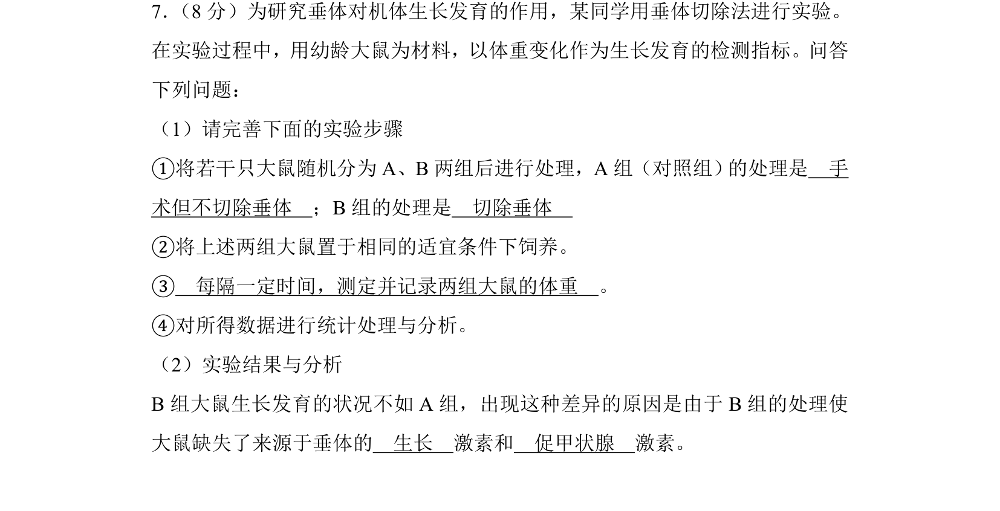
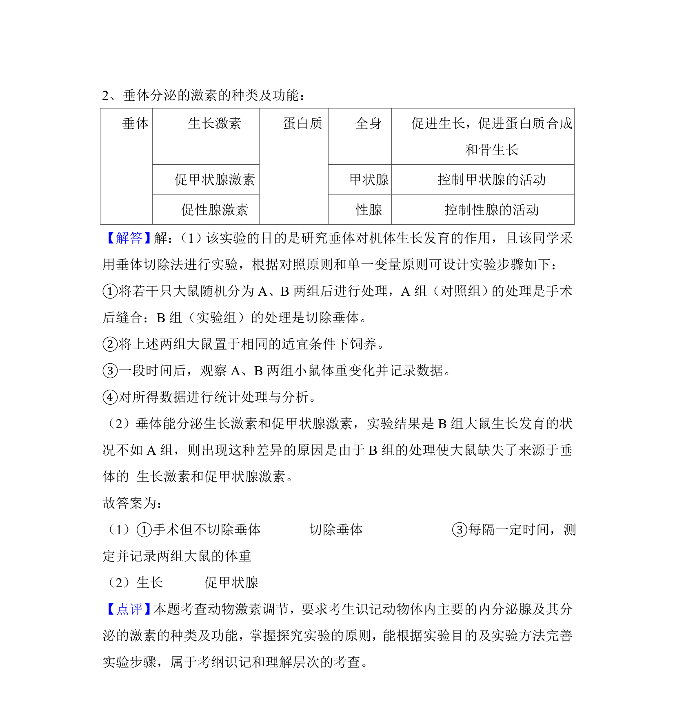

考点：垂体切除 生长激素 促甲状腺激素 动物激素调节

该题通过垂体切除实验探究垂体对生长发育的作用，涉及激素调节与实验设计。

📄 原 PDF 第 6 页：
素材/真题/吉林/2008-2024·（吉林）生物高考真题/2018年高考生物试卷（新课标Ⅱ）（解析卷）.pdf
7． （8分）为研究垂体对机体生长发育的作用，某同学用垂体切除法进行实验。 在实验过程中，用幼龄大鼠为材料，以体重变化作为生长发育的检测指标。问答 下列问题： （1）请完善下面的实验步骤 ①将若干只大鼠随机分为A、B两组后进行处理，A组（对照组） 的处理是 手 术但不切除垂体 ；B组的处理是 切除垂体 ②将上述两组大鼠置于相同的适宜条件下饲养。 ③ 每隔一定时间，测定并记录两组大鼠的体重 。 ④对所得数据进行统计处理与分析。 （2）实验结果与分析 B组大鼠生长发育的状况不如A组，出现这种差异的原因是由于B组的处理使 大鼠缺失了来源于垂体的 生长 激素和 促甲状腺 激素。
【考点】DB：动物激素的调节．菁优网版权所有 【专题】145：实验材料与实验步骤；532：神经调节与体液调节． 【分析】1、探究实验设计时需要遵循对照原则和单一变量原则。